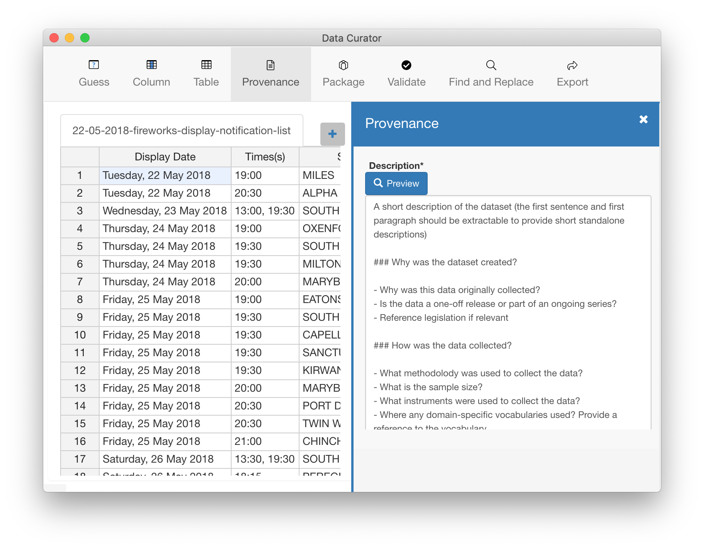

Providing Provenance Information helps people understanding why and how the data was created so they can assess the potential risks in reusing the data for another purpose.
Set provenance information
- Choose Tools > Provenance Information, to open the provenance information panel.
- Enter the provenance information in plain text or format it using Markdown.
- Provenance information is saved when you export the data package
Preview provenance information
- Move the pointer over the Preview button and click it to show the formatted Markdown text.
- Move the pointer over the Edit button and click it to return to edit the text.
Recommended provenance information
Abstract
A short description of the dataset (the first sentence and first paragraph should be extractable to provide short standalone descriptions)
Why was the dataset created?
- Why was this data originally collected?
- Is the data a one-off release or part of an ongoing series?
- If relevant, reference legislation
How was the data collected?
- What methodolody was used to collect the data?
- What is the sample size?
- What instruments were used to collect the data?
- Where any domain-specific vocabularies used? Provide a reference to the vocabulary.
- How should null values in the data be interpreted - as an unknown value, missing value, or the value is not applicable?
When was the data collected?
- Provide the time this data spans (its temporal coverage).
Where was the data collected?
- Provide the geographic area this data spans (its spatial coverage).
How was the data processed for publication?
- Was the data corrected, transformed or aggregated after collection
- If the data has been aggregated, what level of detail can be expected
- Reference the code used to process the data
- What is the delay between collecting and publishing the data?
How to collaborate on the data
- Provide publisher contact details for data consumers to ask questions about the dataset
- Provide a URL to the web site where data consumers can provide feedback, highlight errors, discuss, or be notified of changes to the dataset
Other comments
- State any known caveats or limitations in the data
- List any related data
- Provide the location where visualisations or data can be previewed
- Provide the location where data can be accessed in other formats or via an API
